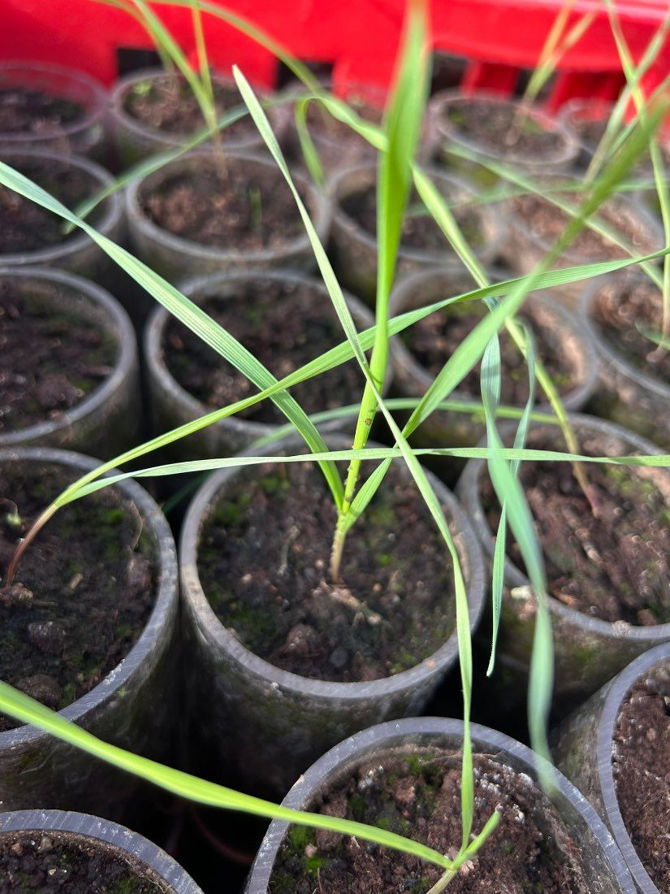

WP1
Grain and shoot traits: finding promising plants early.
We grow about 1,000 individual plants each of intermediate wheatgrass, silphium and sainfoin in the field. Drones carry hyperspectral, RGB, LiDAR and thermal sensors to measure seed vigour, canopy height, leaf chemistry and photosynthesis. Machine learning links these early signals to later grain yield, so that the best candidates can be selected without waiting for years (phenomic selection).
